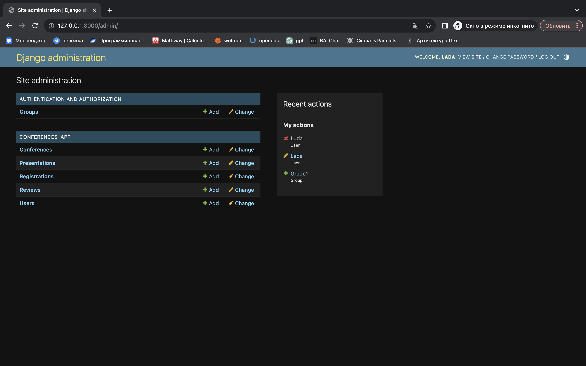
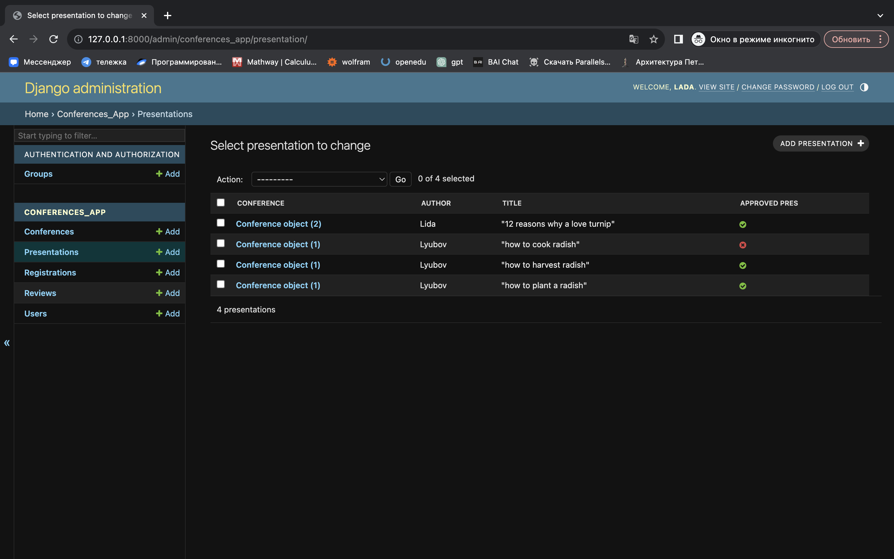
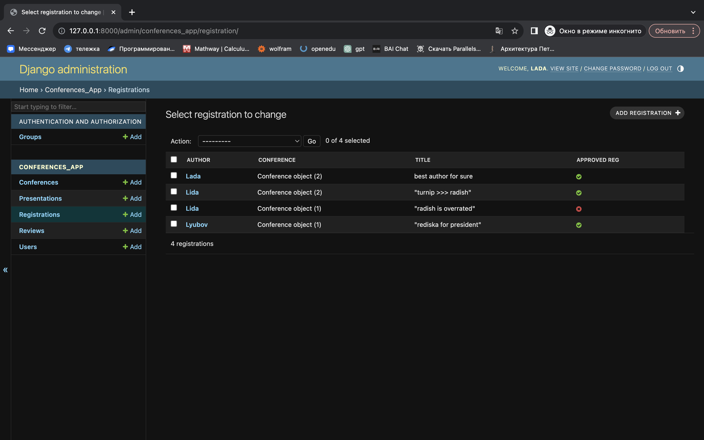
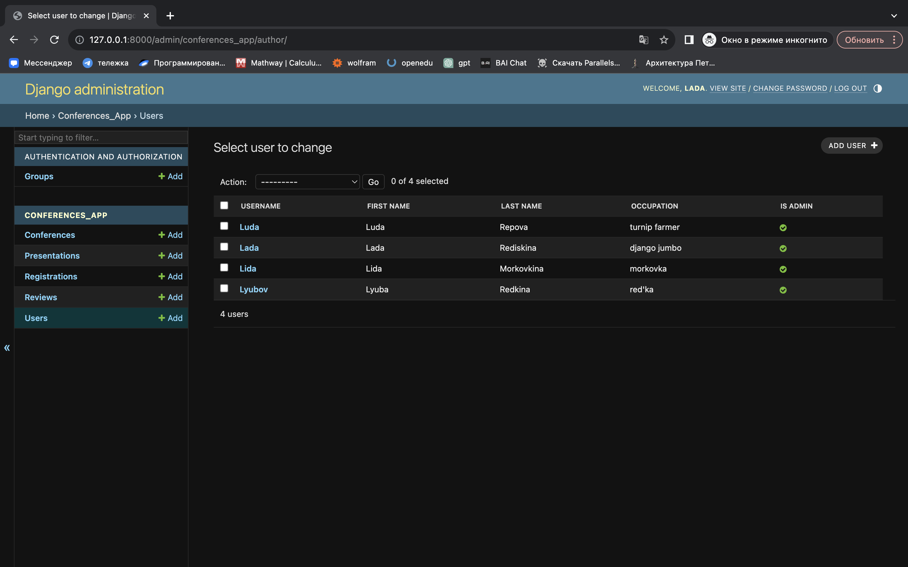
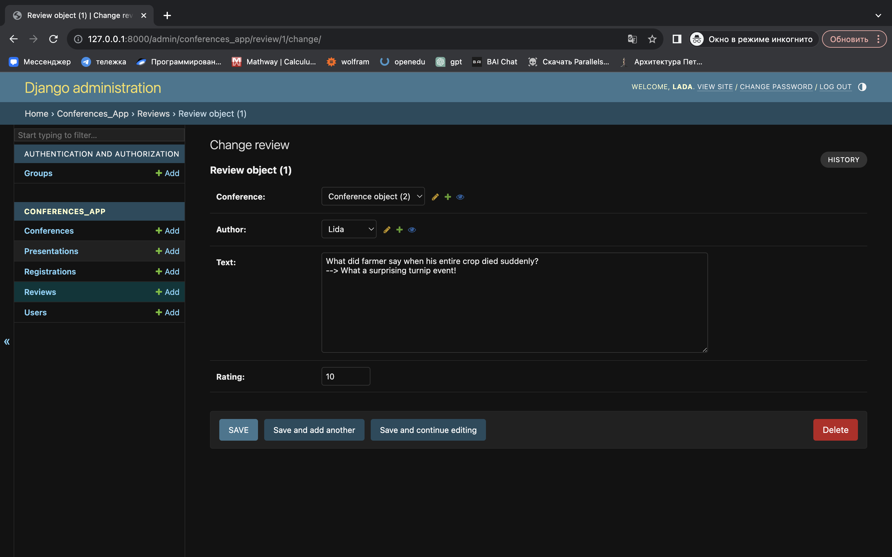
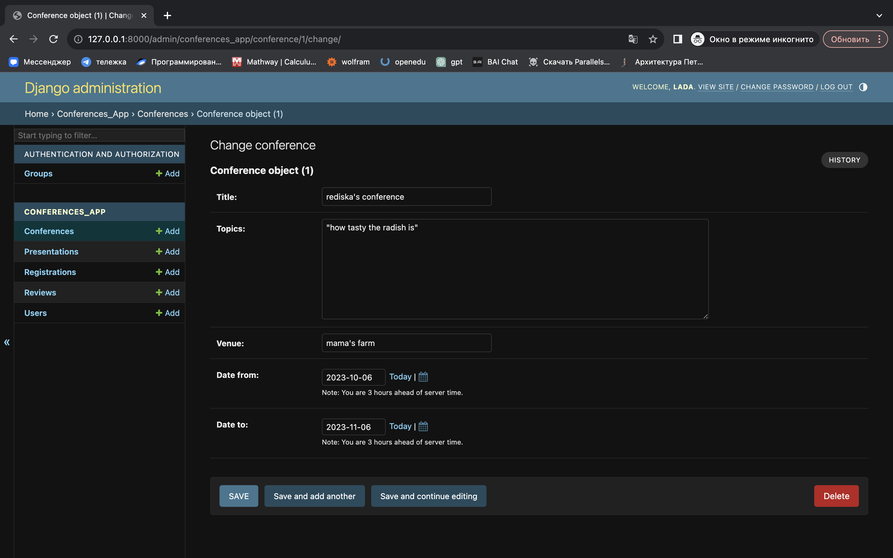

Модуль admin в Django предоставляет встроенный административный интерфейс для управления данными вашего приложения. Он позволяет администраторам и другим пользователям с соответствующими правами легко добавлять, изменять и удалять объекты в базе данных без необходимости в написании пользовательского кода или использования интерфейса командной строки.

В этой части я импортирую необходимые модели из приложения и модуля admin Django. Эти модели будут зарегистрированы в административном интерфейсе Django для управления данными.
from django.contrib import admin
from .models import Author, Conference, Registration, Review, Presentation
Здесь я создаю класс PresentationAdmin, который настраивает административный интерфейс для модели Presentation. Свойство list_display определяет, какие поля будут отображаться в списке объектов. В данном случае, это конференция (conference), автор (author), заголовок (title) и статус утверждения (approved_pres).
Метод has_change_permission определяет, имеет ли текущий пользователь разрешение изменять объект. Код разрешает администраторам изменять любые объекты.
class PresentationAdmin(admin.ModelAdmin):
list_display = ("conference", "author", "title", "approved_pres")
def has_change_permission(self, request, obj=None):
if request.user.is_admin or (obj and obj.author == request.user and not obj.approved_pres):
return True
return False

Аналогично, здесь я создаю класс RegistrationAdmin для модели Registration. Список отображаемых полей определен так же, как и в предыдущем классе. Метод has_change_permission разрешает изменение объектов только администраторам.
class RegistrationAdmin(admin.ModelAdmin):
list_display = ("author", "conference", "title", "approved_reg")
def has_change_permission(self, request, obj=None):
if request.user.is_admin:
return True
return False

В этой части я создаю класс AuthorAdmin для модели Author. Список отображаемых полей включает в себя имя пользователя (username), имя (first_name), фамилию (last_name), занятие (occupation) и статус администратора (is_admin).
class AuthorAdmin(admin.ModelAdmin):
list_display = ("username", "first_name", "last_name", "occupation", "is_admin")

Здесь я регистрирую созданные классы администраторов (RegistrationAdmin, PresentationAdmin, AuthorAdmin) и остальные модели (Conference и Review) в административном интерфейсе Django с помощью admin.site.register. Это позволяет управлять данными моделями через встроенный интерфейс Django.
admin.site.register(Registration, RegistrationAdmin)
admin.site.register(Presentation, PresentationAdmin)
admin.site.register(Author, AuthorAdmin)
admin.site.register(Conference)
admin.site.register(Review)
 